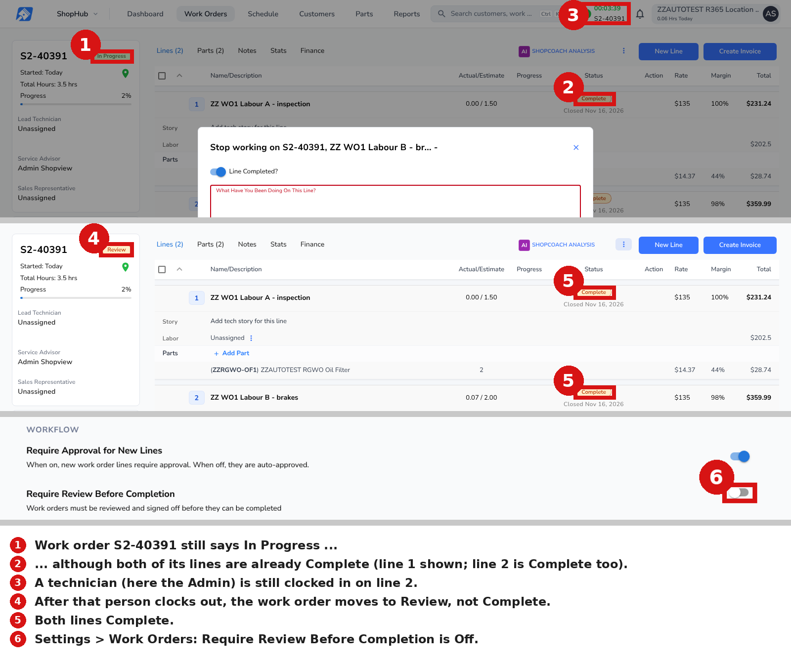

DRAFT - not filed. Classified as a question for Chris (c), not a bug: the written sources do not settle it.
When every line of a work order is Complete and Require Review Before Completion is Off, the work order is meant to become Complete. Here it stays In Progress while a technician is clocked in, and after the clock-out it becomes Review.
Work order S2-40397, one line "ZZ C2 repro line" (approved). Admin pressed Start (clocked in), then pressed Complete on the line. Status badge: In Progress. Admin clocked out: status badge Review. Settings > Work Orders > Require Review Before Completion is Off. (Same on S2-40391.)

The status badge next to the work order number, top left of the work order page. Work orders where nobody is clocked in are not affected (S2-40392 went straight to Complete).
Actual: In Progress after Complete; Review after the clock-out.
Expected: Not settled in writing - see the question.
Confluence 646021121 "Simple Mode - Streamlined Work Order Completion & Bulk Receiving" (16 Jul 2026), Story 16 R12: "When the WO's last remaining open line becomes resolved, the outcome depends on Require review: OFF -> the WO is auto-marked Complete (invoice-ready; no extra manual step) ... Applies regardless of how the last line resolves". R13: "A clock-out that finishes the last line routes the WO to Ready for Review even when review is OFF - left as-is on purpose". Confluence 771391574 "Simple Flow V2" (11 Sep 2026), Story 9: "A work order becomes complete because its lines are".
Staging (app.staging.shopview.com), build v26.45.4-f3d3d2d, 16 Nov 2026, location "ZZAUTOTEST R365 Location C with a name longer than the chip", signed in as Admin. Browser and test machine set to the location's time zone (America/Edmonton).